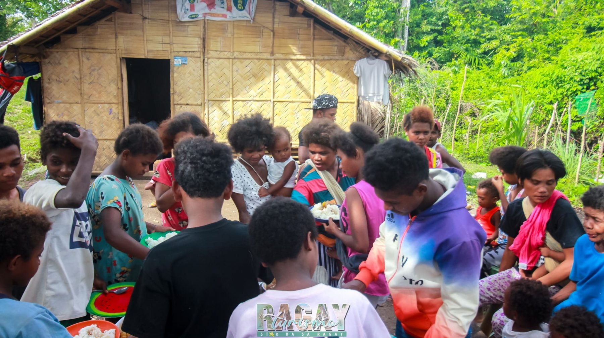

The Abiyan Archives is a digital sanctuary for the Manide language — spoken by the Manide tribe of Camarines Norte. Explore, listen, and help keep this language alive for generations to come.

The Manide are one of the indigenous Negrito peoples of the Philippines, found mainly in Camarines Norte and nearby areas of Quezon. They are known for their deep connection to the forest, their oral traditions, and their distinct language, which carries centuries of ecological knowledge, ritual, and cultural identity.
Their language is classified as threatened (EGIDS 6b) by Ethnologue — still spoken, but facing decline as younger generations increasingly shift to Tagalog and Bicol. As one community elder noted during interviews, "Habang maliit pa rin sila ay naririnig na ang Manide" — children are still hearing the language young, but school shifts them toward Tagalog.
This archive exists to document, preserve, and celebrate the Manide language before it fades — ensuring that oral traditions, history, and cultural wisdom are not lost to time.
The Manide people maintain a rich set of traditions and practices, many of which have been passed down through generations entirely through oral language.
The Manide use herbal remedies passed down through generations. A key plant is the Magtatabako — leaves used to treat stomach pain, found in their ancestral forest land.
Traditionally, women wear the tapis and men wear the bahag. While modern clothing is now more common, traditional attire is still worn during cultural celebrations and gatherings.
The Manide practice pagmamano — placing the hand on an elder's forehead as a sign of respect. Community leadership rotates every three years, and decisions are made collectively.
The Manide have traditional dances performed solo, in traditional clothing, accompanied by live music including guitar. These performances are central to their cultural celebrations and IP Week events.
Women traditionally plant crops and catch alimango (mud crabs) from the sea, while men are considered heads of the family. The NCIP provides livelihood support and scholarships to Manide youth.
The Manide celebrate National Indigenous Peoples Month (NIPM) and hold simple gatherings called magkakaateb (being together). They also observe Philippine national holidays as part of wider society.
Discover Manide words and phrases organized by theme. Each category includes vocabulary, example sentences, and audio pronunciation from native speakers.
Everyday expressions and common salutations in Manide
Terms for family members and community roles
Words for the forest, animals, plants, and the land
Verbs and movement words used in daily Manide life
The Manide numeral system from one to ten
Useful everyday sentences and conversational expressions
Adjectives and describing words in Manide
Time, location, and everyday situational words
The writing system and sound structure of the language
Type a word in Filipino or English and discover its Manide equivalent, complete with a pronunciation guide and audio playback from a native speaker.
| English | Filipino | Manide | Pronunciation | Audio |
|---|
The Manide language uses a phonemic orthography — each letter corresponds to a distinct sound. Below is a guide to the alphabet. Click Listen to hear each sound pronounced by a native Manide speaker.
The Manide people inhabit the mountainous interior of Camarines Norte in the Bicol Region of the Philippines. Their ancestral domain spans forested upland areas where they have lived for generations, maintaining traditions tied deeply to the land.